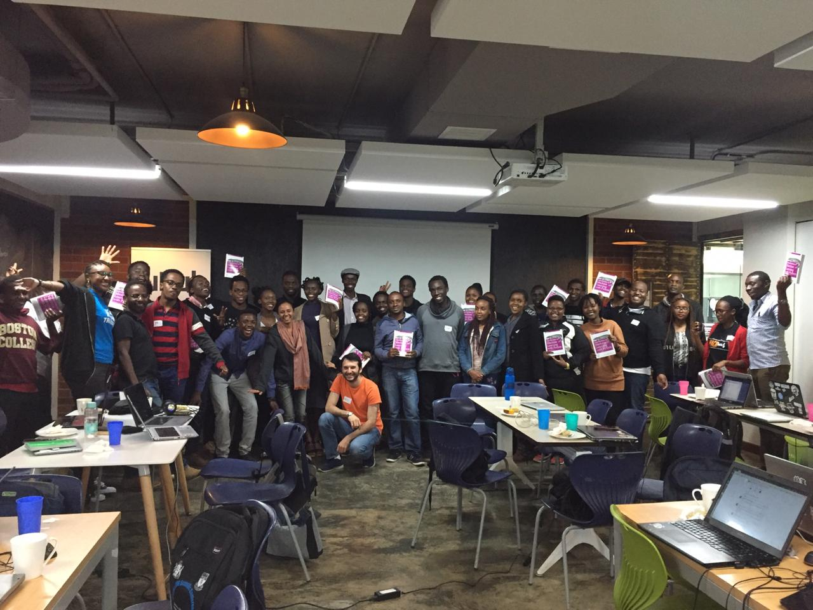

Almost a year ago, after being the co-speaker of a “My first open source
contribution” talk at PyData Berlin 2018, I myself became very motivated and
started actively contributing to the scikit-learn project. I was surprised to
see how much I could and had to learn to improve my contributions, and that was
after over 20 years of programming experience, 6 years of which I did mostly
Python, and several years of working in the industry. It wasn’t even the first
time I was contributing to an open source project, but it was the first time I
was actively looking for issues to fix.
One of the reasons I stayed on the project, was the extremely nice and patient attitude of the reviewers and core developers of the project, most importantly, Joel Nothman. I felt welcomed, tutored, and guided throughout my contributions. Of course it also required my patience, since some of the contributions would go through a long iteration process, even though they were only a few lines of example code. After a while I was more confident taking over some of the more challenging tasks, and it felt more rewarding as they became more challenging.
One day in December (2018), I woke up to find an email in my inbox which said they’d like to have me as a core developer, and if I’d accept. There are very few instances in my life in which I remember such a feeling of happiness flowing through my whole existence. I accepted with joy, and there I was with a whole bunch of new responsibilities added to my shoulders; but the kind which make me want to wake up in the morning to take care of.
It also happened to be the case that the core team was planning a sprint in Paris to go be together and work on issues in person for a few days. I joined that sprint, in February, where we worked for a whole week, 9am to 10pm more or less. It was so stimulating that I did not realize how exhausted I had become. When I went back home, it took me quite a few days to recover, but it was one of the best weeks of my life, working with brilliant people from all around the world. It was also really good for the project, since we managed to solve some of the very long standing issues of the project, which had been open for years.
It was a while after that when I saw an email in the mailing list, asking if somebody could give a hand for a sprint being planned in Nairobi, Kenya. It was going to be organized by Women in Machine Learning and Data Science (WiMLDS), and since it was the combination of two things very close to my heart (diversity and open source), I made sure to respond to it and offer my help ASAP. Reshama Shaikh, the main organizer from the WiMLDS side, got back to me shortly and we started planning for the sprint. What I did NOT know, was that they were planning to fly a contributor to Nairobi to be there in person for the sprint, which I found a very nice surprise.
I think it took around 4 months of planning which I was involved with, including vaccination, visa, etc. I don’t think we even planned the sprint in Paris this much, but Reshama and Mariam Haji (the main organizer in Nairobi) were both very thorough and planned everything to the last bit of it. So I flew to Nairobi, stayed there for 2 days, and had the sprint on a Saturday. We ended up having about 40 attendees, almost all new to open source, and by the end of the day we had over 20 open pull requests (PRs) generated by them on that single day.
It’s so gratifying to see the joy in people’s face when they open their first
PR and receive feedback from the core developers. I always love to see their
faces when they start touching the files of the package, which they’ve used
till then as a user. I still remember the feeling of sending a patch for an
open source project for the first time (before git was invented), and when I
see those same feelings in new contributors faces, it pushes all the exhaustion
out of my being.
I’d say it was a very successful sprint, specially since quite a few of the contributors we had there, are still contributing and opening new PRs even afterwards. To me, that’s what a sprint for new contributors is for, to enable them and break all the barriers they feel having in front of them, and have them motivated enough that they continue contributing afterwards.
However, I think there are still a few things which could be improved and I’m noting them here mostly for my own future reference.
There is a trade off between how much information the instructor tries to give
to the audience, before they jump into finding issues to work on, and how much
time is left for them to contribute. I kept the introduction very short, and
just pointed them to the part of the documentation where they could follow the
instructions and start working on issues. I did that mostly because I
personally don’t find those slide based talks very productive. However, I
figured most people were lost, and they were not even sure which question to
ask or where to start. What helped, was that I found a minor issue in the
documentation, and fixed it and submitted a corresponding PR, while sharing my
screen. Immediately after that it felt like the room now knows much better what
they’re doing. I would have one of those ready next time, and have kind of a
hands on tutorial on contributing, git, and GitHub instead.
Another thing which I think we should improve in sklearn documentation, is
the guide for people to setup their environments. There were people who were
still trying to setup their environment and get the package to compile still at
the end of the day, and that to me is a strong hint that something could be improved.
Another point is that it was a weekend, and most core developers were either sleeping or not at their PCs. Being the sole person trying to review the PRs as they come and at the same time to answer the questions on-site, is almost not manageable. I’d try to coordinate with at least one other core developer to be online during the sprint, before the sprint this time.
Overall, I loved everything related to this sprint, and I hope we get to do it again next year :)